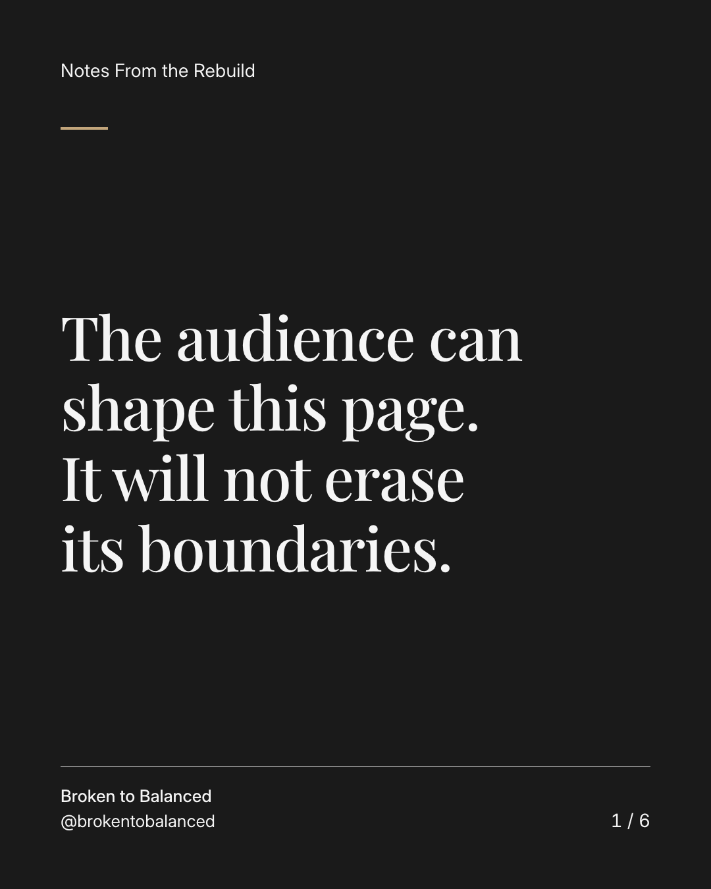
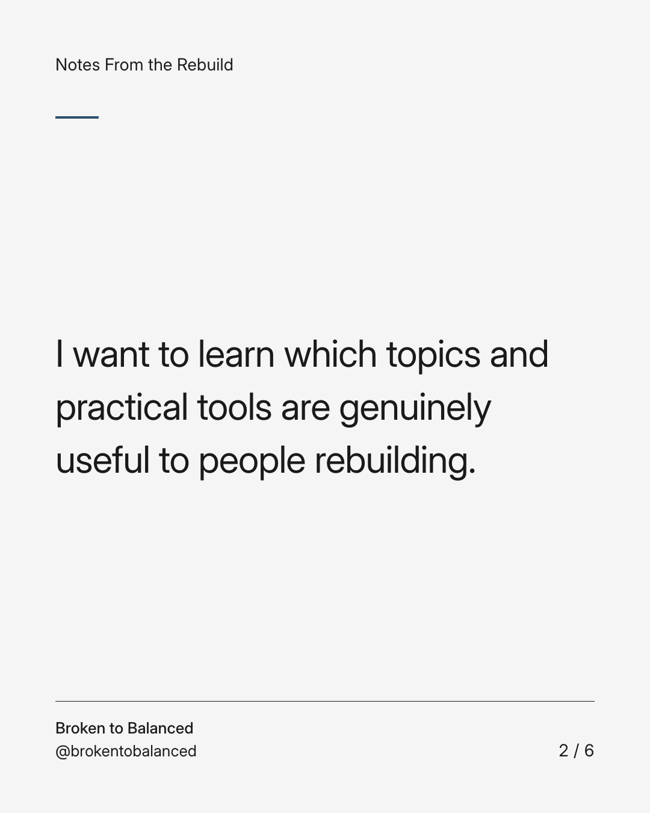
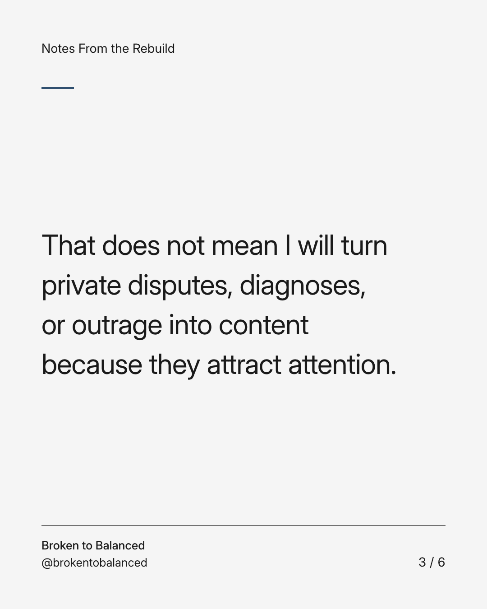
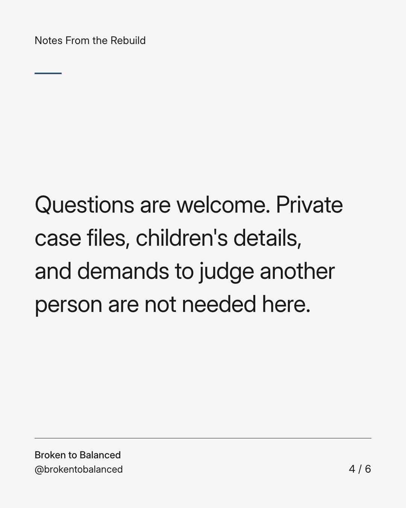
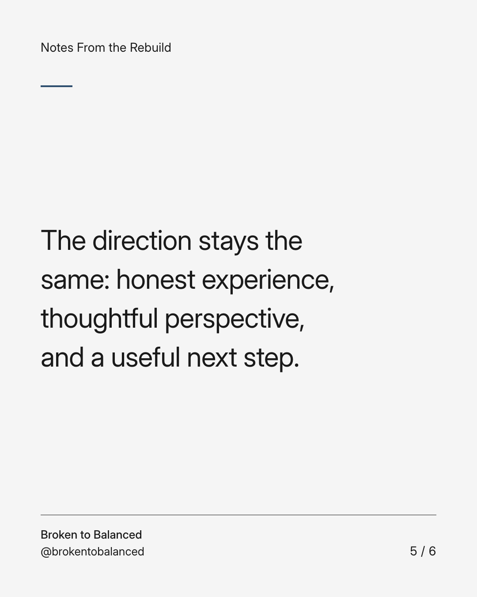
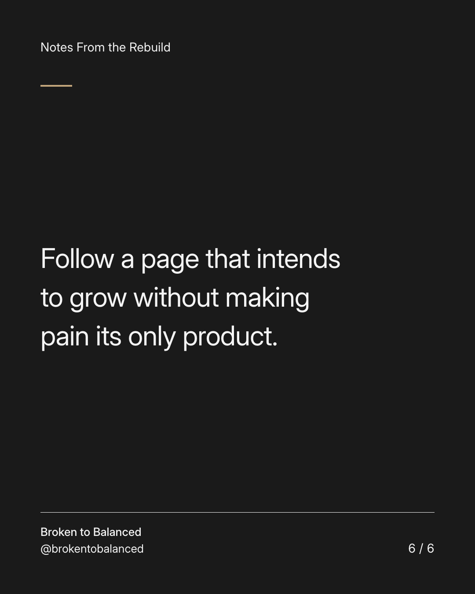

Exact text and accessibility text
The audience can shape this page. It will not erase its boundaries.
Slide 1 of 6. The audience can shape this page. It will not erase its boundaries.


Exact text and accessibility text
I want to learn which topics and practical tools are genuinely useful to people rebuilding.
Slide 2 of 6. I want to learn which topics and practical tools are genuinely useful to people rebuilding.


Exact text and accessibility text
That does not mean I will turn private disputes, diagnoses, or outrage into content because they attract attention.
Slide 3 of 6. That does not mean I will turn private disputes, diagnoses, or outrage into content because they attract attention.


Exact text and accessibility text
Questions are welcome. Private case files, children's details, and demands to judge another person are not needed here.
Slide 4 of 6. Questions are welcome. Private case files, children's details, and demands to judge another person are not needed here.


Exact text and accessibility text
The direction stays the same: honest experience, thoughtful perspective, and a useful next step.
Slide 5 of 6. The direction stays the same: honest experience, thoughtful perspective, and a useful next step.


Exact text and accessibility text
Follow a page that intends to grow without making pain its only product.
Slide 6 of 6. Follow a page that intends to grow without making pain its only product.
Exact caption
Plain-text fallback: select and copy the caption.